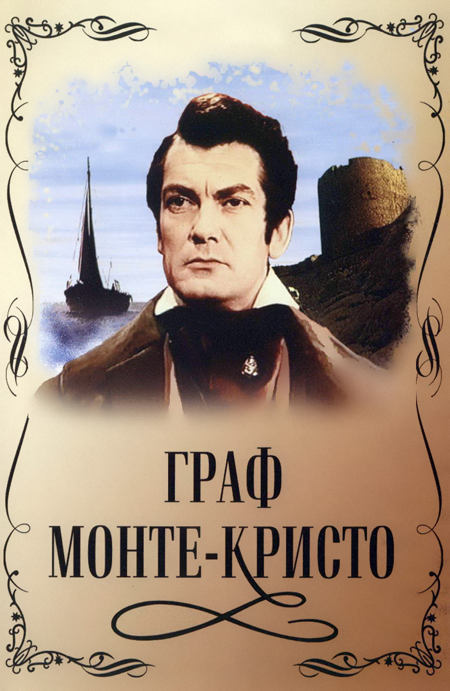

Олександр Дюма "Граф Монте-Крісто"
Роман розповідає історію юнака Едмона Дантеса, несправедливо звинуваченого й запротореного у в'язницю в замку Іф, де він провів 14 років. Дантесу щастить неймовірним чином утекти й відшукати скарб, про який йому розповів інший в'язень. Маючи кошти, Дантес відшукує своїх кривдників, які на той час уже зробили кар'єру й займають високе становище в суспільстві, й руйнує їхнє життя, але врешті-решт, після вчиненої помсти, залишається з пусткою в душі.